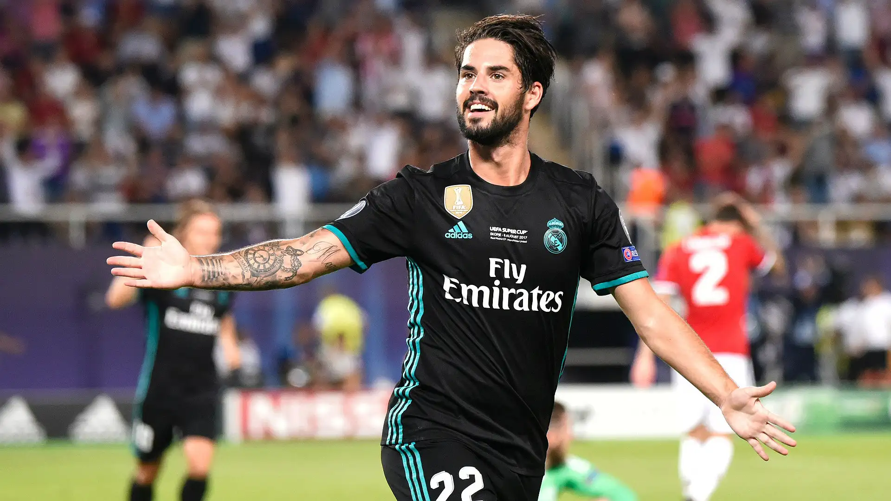
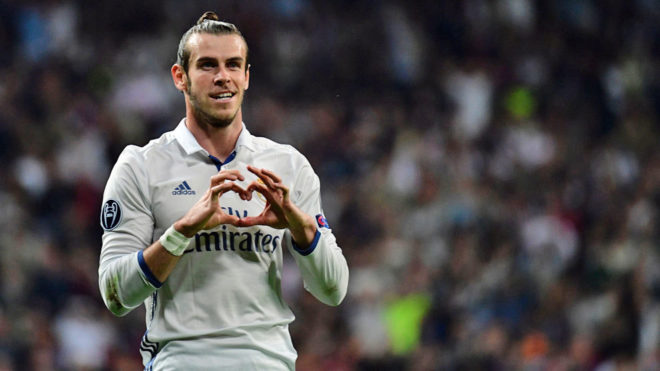
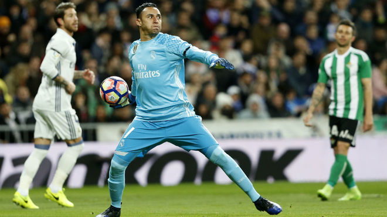
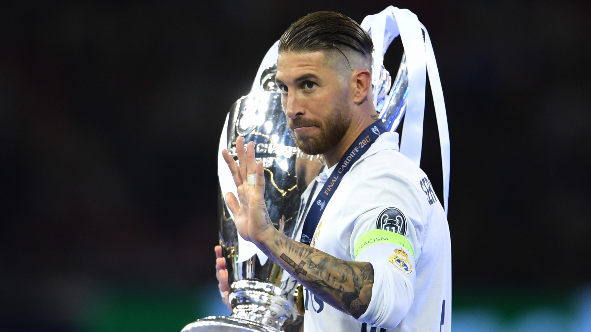
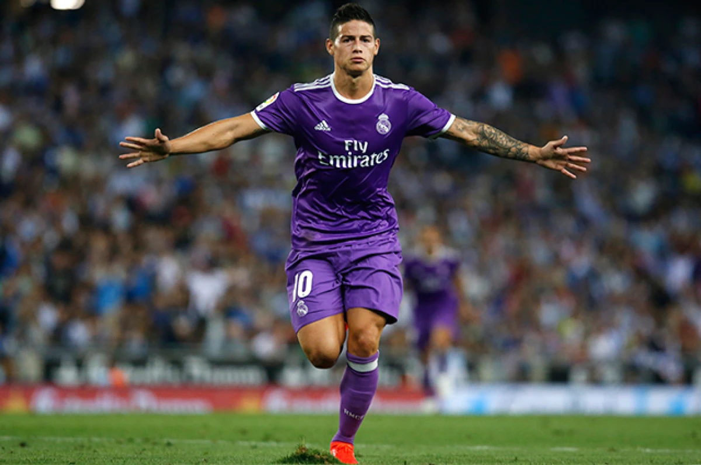
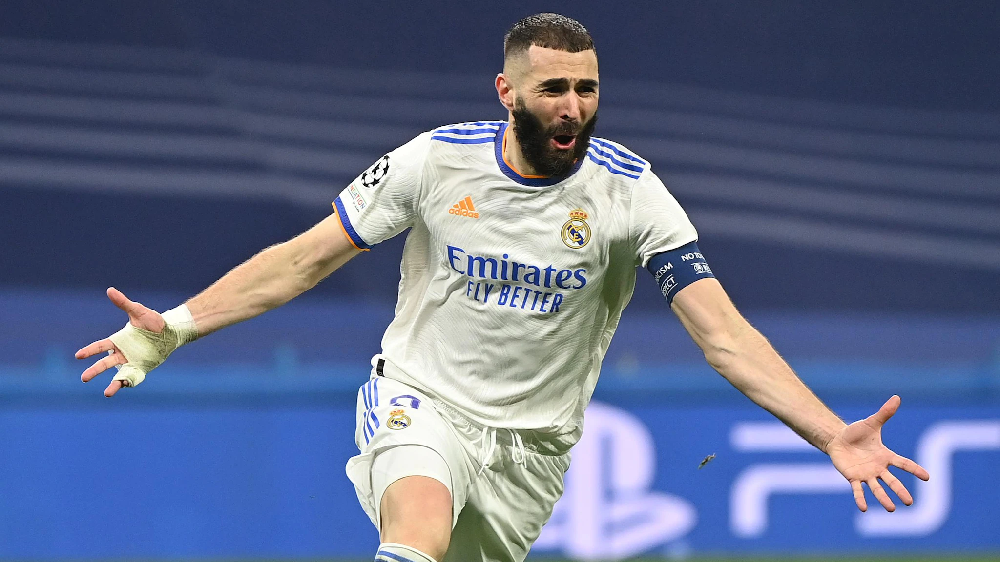
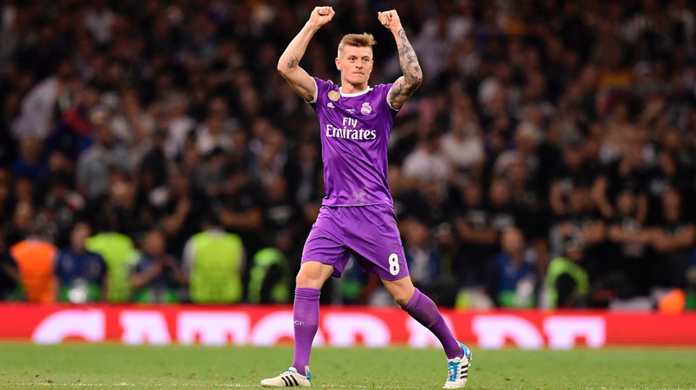
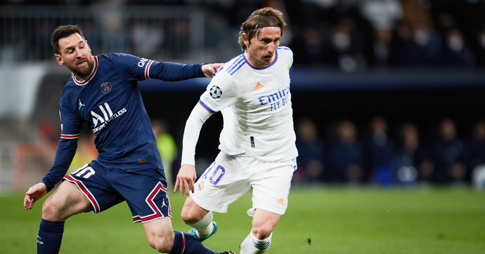

JUGADORES DESTACADOS
CR7

Cristiano Ronaldo dos Santos Aveiro (Funchal, Madeira, 5 de febrero de 1985) es un futbolista portugués. Juega como delantero y su equipo actual es el Al-Nassr F. C. de la Liga Profesional Saudí.Es internacional absoluto con la selección de Portugal, de la cual es capitán, máximo goleador histórico y jugador con más presencias con 217 partidos, logro alcanzado en las eliminatorias para la Eurocopa 2024, reconocido por el Libro Guinness de los récords. Considerado con frecuencia el mejor y más completo futbolista, así como el mayor goleador de todos los tiempos en partidos oficiales, además de uno de los mejores de todos los tiempos; es uno de los futbolistas más laureados de la historia, habiendo ganado, entre otras distinciones, cinco veces el Balón de Oro, cinco premios de la FIFA al mejor jugador del mundo y cuatro Botas de Oro. Ganador del Premio The Best FIFA de 2016 y Premio The Best FIFA de 2017. En 2020, tuvo el honor de ser elegido el mejor Jugador del Siglo XXI en la gala de los Globe Soccer Awards,convirtiéndose en el primer futbolista europeo y el primer portugués en recibirlo, además de ser incluido en el Dream Team del Balón de Oro.Fue ganador del premio Premio Puskás.
Isco
Francisco Román Alarcón Suárez (Benalmádena, Málaga, 21 de abril de 1992), conocido deportivamente como Isco, es un futbolista español. Juega como centrocampista en el Real Betis Balompié de la Primera División de España. En el año 2012 fue galardonado con el Golden Boy, considerado como el Balón de Oro entre los futbolistas menores de 21 años, certificando su gran rendimiento mostrado en la temporada 2012-13 con el Málaga Club de Fútbol. Un año más tarde, se adjudicó el Trofeo Bravo, reconociéndolo como el mejor jugador joven del fútbol europeo. Ambos galardones se vieron complementados con la Bota de Bronce lograda en la Eurocopa Sub-21 de 2013, torneo en el cual la selección española se proclamó campeona. Se caracteriza por sus grandes pases y regate con el balón, además de su capacidad y visión del juego.
BALE
Gareth Frank Bale (Cardiff, Gales; 16 de julio de 1989) es un exfutbolista galés que jugaba como delantero. Jugó la mayor parte de su carrera en el Real Madrid C. F. donde permaneció durante 8 temporadas, desde 2013 hasta 2022. También tuvo etapas en el Tottenham Hotspur F. C. desde 2007 hasta 2013 y desde 2020 hasta 2021. Su último equipo fue Los Angeles F. C. Es considerado uno de los mejores jugadores de su generación. Fue internacional absoluto con la selección galesa desde 2006 hasta 2023, de la cual es el máximo goleador histórico. Bale debutó con 16 años y 315 días en un partido contra Trinidad y Tobago, ostentando, a partir de entonces y por varios años, el récord de ser el debutante más joven en la historia del seleccionado británico. En la actualidad es el segundo tras haber sido superado en 2013 por el aún más joven Harry Wilson. Bale era considerado como uno de los más grandes talentos emergentes de la Premier League en su momento y del mundo en la actualidad, ha sido reconocido con numerosas distinciones, tales como el Premio Carwyn James de la BBC galesa o el premio al Mejor Jugador de la Premier League —siendo el cuarto galés en conseguirlo— el cual ganó en dos oportunidades, uniéndose así a la selecta lista de bicampeones formada por Mark Hughes, Alan Shearer, Thierry Henry y Cristiano Ronaldo. También tiene en su haber otras distinciones como el premio al Mejor Jugador Joven de la Premier League y el haber sido elegido en tres oportunidades como Jugador Galés del Año, entre muchas otras. En 2011 integró el Equipo Ideal de la UEFA, y en 2013 la FIFA le incluyó en la lista de los 23 candidatos al Balón de Oro. Ese mismo año, además, la FIFA publicó un listado con los diez futbolistas más rápidos del mundo, ocupando Bale la primera posición al alcanzar una velocidad de hasta 36.9 km/h
Keylor Navas
Keilor Antonio Navas Gamboa (Pérez Zeledón, San José, 15 de diciembre de 1986) es un futbolista costarricense que juega como portero, actualmente se encuentra sin equipo. Es el guardameta con más participaciones con la selección de Costa Rica. Comenzó su carrera en el equipo ADEFIP Pedregoso de Pérez Zeledón, club de la quinta división e integrante de la Federación Costarricense de Fútbol, luego continuó su carrera profesional en el Deportivo Saprissa, donde consiguió cinco títulos costarricenses de manera consecutiva, además del Campeonato de verano 2010. Con el equipo saprissista se destaca la histórica participación en el Mundial de Clubes de 2005, en el cual obtuvo el tercer lugar de la competición. Anteriormente, se coronó campeón de la Copa de Campeones de la Concacaf de ese mismo año. A la edad de 23 años, se marchó a España para jugar con el Albacete Balompié en la temporada 2010-11 de la Segunda División. Sin embargo, su conjunto descendió y fue cedido a préstamo al Levante Unión Deportiva. En su primera temporada solamente sumó un partido de Liga, si bien la temporada 2013-14, tras la salida de Gustavo Munúa, se hizo con la titularidad. Con esto, fue galardonado con el premio al Mejor Guardameta de la Liga. premio otorgado por LaLiga en dicho año basado en el porcentaje de paradas.
Sergio Ramos
Sergio Ramos García (Camas, 30 de marzo de 1986) es un futbolista español que juega como defensa y actualmente se encuentra sin equipo. Fue internacional con la selección de fútbol de España desde el 26 de marzo de 2005 hasta el 23 de febrero de 2023, con la que se proclamó campeón del mundo en 2010 y campeón de Europa en 2012. Formado en las categorías inferiores del Sevilla Fútbol Club, debutó en Primera División con el equipo sevillano en 2004. Para la temporada 2005-06 fichó por otro equipo de España, el Real Madrid Club de Fútbol, equipo del que fue capitán desde el curso 2015-16 y con el que se ha proclamado, entre otros títulos, pentacampeón de Liga, tetracampeón de Europa y tetracampeón del mundo. Además, es el cuarto jugador con más partidos (671) en la historia del conjunto blanco, tras Raúl (741), Iker Casillas (725) y Sanchís (708). Fue internacional absoluto con la selección española desde 2005 y fue su capitán desde 2016. Con ella se ha proclamado bicampeón de Europa (2008, 2012), y campeón del mundo (2010).Es el futbolista español con más internacionalidades desde el 12 de octubre de 2019,Es el tercer jugador europeo con más partidos internacionales con su selección nacional (180), solo por detrás de Cristiano Ronaldo (217) y Luka Modric (184) mientras que a nivel mundial es el futbolista con más victorias en partidos de selección.
James Rodrigues
James David Rodríguez Rubio (Cúcuta, Norte de Santander; 12 de julio de 1991) es un futbolista colombiano que juega como centrocampista en el Rayo Vallecano de la Primera División de España. Es internacional absoluto con la selección de Colombia, de la que es su capitán. Fue elegido en 2014 por el Centro Internacional de Estudios del Deporte como el segundo mejor centrocampista ofensivo de Europa. Fue el vencedor de la Bota de Oro del Mundial Brasil 2014, tras anotar seis tantos que permitieron que su selección nacional alcanzara los cuartos de final del torneo, siendo hasta la fecha la mejor actuación de Colombia en un Mundial.Uno de estos tantos fue premiado como el mejor gol del Mundial y tiempo después ganó el Premio Puskás que lo acredita como mejor gol del año 2014. En la Copa América 2024 ganó el premio al mejor jugador del campeonato. También superó el récord de Lionel Messi como máximo asistidor en una sola edición, Colombia terminaría subcampeona en este torneo
Karim Benzema
Karim Mostafa Benzema ([árabe: / كريم بنزيما /; pronunciación en francés: /ka.ʁim bɛn.ze.ma/]; Lyon, 19 de diciembre de 1987) es un futbolista francés de ascendencia argelina que juega como delantero en el Al-Ittihad Jeddah Club de la Liga Profesional Saudí. Fue internacional absoluto con la selección de Francia desde 2007 hasta 2022, de la cual ganó el Campeonato de Europa Sub-17 de la UEFA de 2004 e hizo su debut absoluto con Francia el 22 de agosto de 2009 a los 19 años, entrando por Thierry Henry en el minuto 85 vs. Eslovaquia y su equipo ganó 1-0 con un gol del ya mencionado. Se ha consagrado campeón de la Liga de Naciones en 2021. Es el jugador francés de la historia con más goles en categorías absolutas como profesional tras superar en 2022 a Thierry Henry, y antes a Roger Courtois y Michel Platini. En esa misma temporada se convirtió en el jugador francés con más goles oficiales anotados para un mismo club —311 con el Real Madrid—, superando el registro datado en 1952 por el ya mencionado Roger Courtois, quien marcó 281 con el Football Club Sochaux-Montbéliard; y el primero a nivel absoluto de clubes con Iniciado como profesional en el Olympique de Lyon, contribuyó a vencer tres títulos de la Ligue 1. En 2008, fue nombrado «Jugador del Año» de la liga y en el «Equipo del Año» habiendo terminado como máximo goleador y ganando su cuarto título de liga y su primera Copa de Francia. En 2009 fue el traspaso récord del fútbol galo al recalar en el Real Madrid por valor de 35 millones de euros. Después de competir para establecerse en su temporada de debut, finalmente logró una tasa constante de goles con el club y, en particular, pasó a formar parte de un trío altamente calificado junto a Cristiano Ronaldo y Gareth Bale, apodado «BBC», que fueron parte integral de un período en el que el Real Madrid ganó cuatro títulos de la Liga de Campeones entre 2014 y 2018.
Toni Kroos
Toni Kroos es un exfutbolista alemán que jugaba como centrocampista. Destacando por su visión de juego, pase y golpeo de balón, es considerado uno de los jugadores más destacados de su generación y es uno de los más laureados en la historia del fútbol. Sus mayores logros con la selección de Alemania fueron las semifinales de la Copa del Mundo de 2010 y de la Eurocopa 2012, antes de conquistar el Mundial de Brasil 2014 tras vencer a Argentina por 1-0. Colaboró con dos goles, ambos en la semifinal, y cuatro asistencias en el torneo, ayudando a que su selección se convirtiera en la primera europea en ser campeona en suelo americano.En la Eurocopa 2016, fue seleccionado para el Equipo del Torneo. Antes, con la Selección sub-17 fue galardonado con el Balón de Oro y la Bota de Bronce del Mundial sub-17 de 2007 celebrado en Corea del Sur, donde finalizó en el tercer puesto. Actualmente es el máximo ganador de la Copa Mundial de Clubes de la FIFA con seis títulos y también de la Liga de Campeones de la UEFA también con seis títulos, junto a Paco Gento, Luka Modrić, Dani Carvajal y Nacho.
luka modrić
Luka Modrić ( Zadar, Croacia, 9 de septiembre de 1985) es un futbolista croata que desde 2012 juega como centrocampista en el Real Madrid C. F. de la Primera División de España.Fue ganador del Balón de Oro y obtuvo el Premio The Best al mejor jugador del mundo según la FIFA en 2018.Con 27 títulos es el jugador con más títulos logrados a lo largo de la historia en el Real Madrid C. F. Puede desempeñarse en todas las posiciones del centro del campo, principalmente como volante central, mediocampista ofensivo o incluso extremo. Modrić se incorporó con tan solo 16 años a las categorías inferiores del Dinamo Zagreb, club en el que, tras dos cesiones, conquistó un total de seis títulos antes de ser traspasado al Tottenham Hotspur F. C. a mediados de 2008. En Londres permaneció por cuatro temporadas antes de recalar en el Real Madrid C. F,conquistando apenas unas horas después de la confirmación de su traspaso la Supercopa de España. En su segunda temporada, conquistó la Copa del Rey y la Liga de Campeones.